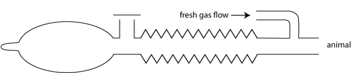

Mapleson D circuits
The fresh gas flow rate for these circuits to prevent rebreathing depends on the animal's respiratory rate. 200 - 300mL/kg/min is reasonably safe; 500mL/kg/min wil prevent rebreathing under almost all circumstances. Low flow rates can only be safely used if you are monitoring respiratory carbon dioxide (and know what the numbers mean!!).
T piece

Bain
Parallel Bain
dia
How it works